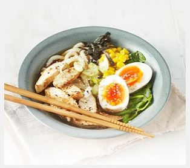

See
Your Name
"Although a live-action remake of Your Name set in the United States is already in production, fans of Japanese anime will definitely want to see the original first. An animated romantic fantasy, Your Name is the story of two Japanese high-schoolers, Mitsuha and Taki, who inexplicably start to swap bodies. A huge commercial success in Japan, the film was praised for both its animation and emotional story, and Shinkai had another hit wih Weathering with You, released in 2019" - Japan movie
Your Name movieListen
Japonese
"Often blending with the other genres (particularly j-pop and j-rock), Japanese electronic music (sometimes referred to as J-Synth) has flourished both in Japan and abroad in recent years. Japanese artists such as Takako Minekawa, Fantastic Plastic Machine (aka Tomoyuki Tanaka), and Kahimi Karie" - Japonese songs
Japan MusicTaste
Noodles
Ingredients 700ml chicken stock 3 garlic cloves, halved 4 tbsp soy sauce, plus extra to season 1 tsp Worcestershire sauce thumb-sized piece of ginger, sliced ½ tsp Chinese five spice pinch of chilli powder 1 tsp white sugar (optional) 375g ramen noodles 400g sliced cooked pork or chicken breast 2 tsp sesame oil here, or check out her recipe .
 Noodles soup